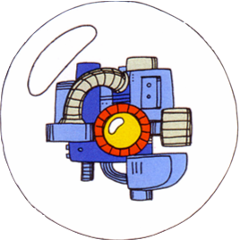

This is the main walkthrough section of the website. You can play through the levels in the order suggested in the table of contents below; there will be buttons at the bottom of each section to take you to the next and previous parts. Alternatively, you can click on one of the levels in the table if you need help with a specific level.
Table of Contents
J) Wily's Fortress 3
Reaching The Boss
This level takes place in the sewer system of Wily's fortress, with a yellow metallic tunnel surrounded by salmon-pink walls. It's pretty short (maybe the shortest level in the game) so don't worry because after this, you'll have reached the final level in the game. Save some of the Super Arm for the boss as it'll help a lot. Like I said, this is short so it won't take long at all to reach the boss.
You'll start to the left of three Adhering Suzies. Use the Mega Buster to kill the two closest ones instead of wasting other weapons' energy, and then jump down the gap down the right, holding towards the rightmost wall and timing it so that the last Suzy doesn't hit you. You should land on a small ledge at the top-right of the next screen. A Screwdriver is on the celing nearby but it's hard to reach so instead focus on avoiding its beams (use the Thunder Beam if you really want to get rid of it). The top of the three Suzies here should be killed with the Mega Buster and the other two avoided by jumping in between them at the right time to get down to the next screen. This area is just like a mirrored version of the last one except the Suzies have all shifted up by one level. Easy to deal with; defeat them and fall down one more screen.
Another similar looking area, but this time there are two Screwdrivers so you might want to try and get rid of them. There is a safe place to stand below though so look out for where their beams can't hit. Finally, fall down one more pit and you'll reach a long corridor leading to the right. A huge stream of water will rush into you from behind, pushing you forwards and making you run faster. Use the speed of the current to your advantage, and keep shooting ahead because before you know it you'll have Pepes flying in front of you, like in Ice Man's stage. Mash the shoot button and you should be able to kill them before they can attack you. Some of them may drop items as well which is helpful.
When you've defeated about 6 of them, they'll briefly stop coming. After a few seconds, you'll be faced with Killer Bombs instead, and you have two options to get by them unscathed:
- Stop holding right (to slow Mega Man down) and shoot right to hit the Killer Bombs as they come onscreen. Their explosions will hurt if you're moving fast with the water, but slowing down here should stop the explosions from affecting you if your shots hit them from afar.
- Don't bother shooting them and instead just keep running fast, jumping over them with good timing. I think this is the easier method and I usually do this but it's up to you as they may drop items if you kill them.
After you've passed a certain amount of them (their number will depend on whether you're slowing down or not), you'll come to a more open area with a path leading to the bottom right. Watch out as Killer Bombs may still be flying out at you from the right and then head forwards to the boss. I know I mentioned that this boss is weak to the Super Arm but don't equip it just yet, keep the Mega Buster on for now. You'll understand why soon.
Boss Fight: CWU-01P
This isn't really a regular boss. It's more like fighting several weak enemies in a row than a one-on-one duel. The main thing that can make this hard is the small size of the room which makes it really hard to dodge the enemies as they move around the walls and floor, so you'll want to take them out as fast as possible before it's too late.
This robot, given the code name CWU-01P, was designed by Dr Wily to keep his sewage system clean and safe from intruders. There are seven of them in total that you'll need to defeat, but don't let this alarm you as they all have low health. They share one large health bar despite being separate enemies. The machines will each emerge from one of the chutes located at the top, left and right parts of the screen, and will each be inside a large bubble, presumably to keep them from short-circuiting due to the water. They'll initially move slow but each one that emerges will be a bit quicker than the last. The last few machines will be extremely fast, making them tricker to aim at and dodge. They also shoot a lot of projectiles which deal a fair bit of damage.
You might want to throw the blocks in the middle of the area at the robots; the machines are weak to them and when a block hits one it will destroy that robot instantly. However, I recommend waiting until the second half of the fight to do this. Since the first few robots are the slowest, simply fire your Mega Buster at them repeatedly to destroy them, using the blocks as a platform to reach the robots more easily. When three or four of them have gone down, use your Super Arm to throw the blocks. Hopefully you won't miss as there isn't a lot of space for them to dodge the blocks; if you hit them successfully each time, the boss will be defeated before you know it. If you have no blocks left then keep using the Mega Buster instead, but it's almost impossible to dodge their attacks once the blocks are gone and you have nothing to stand on. Unfortunately, the blocks won't come back if you die (unless you get a game over).
Once the CWU-01P bots have all been destroyed, it's time for the final level. Told you this stage was short.